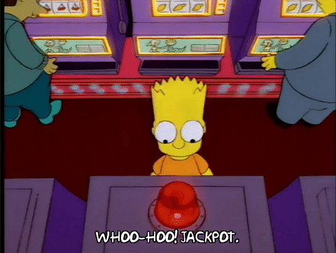
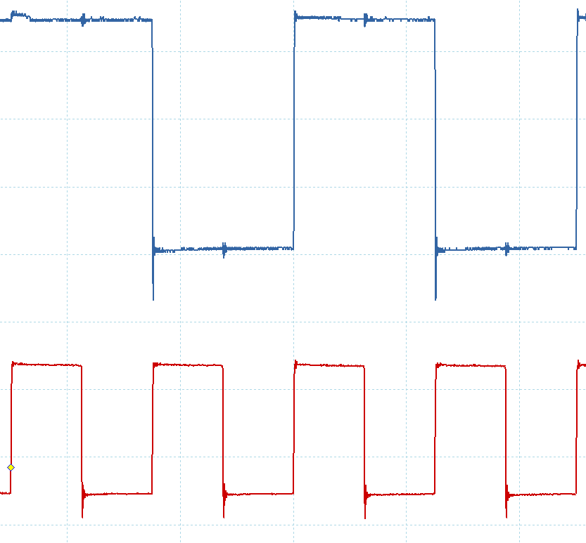

How To
OPTIMIZE
A SHITTY Light-Saber
Der Plan
- Bare-Metal-Programmierung mit C++
- Ranges (Ansatzweise)
- Lesbarkeit und Wartbarkeit erhöhen
- Zeigen was technisch möglich ist
- Kurz: ein kleinen Einblick zeigen
Aufhänger?
- ein lustiges Beispielprojekt
- LED-Leiste übrig
- Devboard verfügbar
- Holzreste auch

- billiges "shitty" Lichtschwert! ist doch klar!

How To
FAIL
A SHITTY Light-Saber
Die LEDs
- 4x 30 LEDs vom Typ WS2812b
- 800 kBit/s-Bus
- 24bit-RGB-LED


SPI?

nope
- Signal sieht anders aus..
- WS2801 wäre SPI......

WS2812b ist aber beliebt!
Wie machen es die anderen?
ADAFRUIT NeoPixel (Arduino)
void rainbowCycle(uint8_t wait) {
uint16_t i, j;
for(j=0; j<256 * 5; j++) { // 5 cycles of all colors on wheel
for(i=0; i< strip.numPixels(); i++) {
strip.setPixelColor(i, Wheel(((i * 256 / strip.numPixels()) + j) & 255));
}
strip.show();
delay(wait);
}}ADAFRUIT NeoPixel (Arduino)
// Bit 7:
"out %[port] , %[hi]" "\n\t" // 1 PORT = hi
"mov %[n2] , %[lo]" "\n\t" // 1 n2 = lo
"out %[port] , %[n1]" "\n\t" // 1 PORT = n1
"rjmp .+0" "\n\t" // 2 nop nop
"sbrc %[byte] , 6" "\n\t" // 1-2 if(b & 0x40)
"mov %[n2] , %[hi]" "\n\t" // 0-1 n2 = hi
"out %[port] , %[lo]" "\n\t" // 1 PORT = lo
"rjmp .+0" "\n\t" // 2 nop nop
// Bit 6:
"out %[port] , %[hi]" "\n\t" // 1 PORT = hi
"mov %[n1] , %[lo]" "\n\t" // 1 n1 = lo
"out %[port] , %[n2]" "\n\t" // 1 PORT = n2
"rjmp .+0" "\n\t" // 2 nop nop
"sbrc %[byte] , 5" "\n\t" // 1-2 if(b & 0x20)
"mov %[n1] , %[hi]" "\n\t" // 0-1 n1 = hi
"out %[port] , %[lo]" "\n\t" // 1 PORT = lo
"rjmp .+0" "\n\t" // 2 nop nopZeitbedarf
- Datenübertragung: 800kbits/s bzw 100 KBytes/s
- 4x30 Leds
- 24 Bit bzw 3 Byte Auflösung
- 60Hz Aktualisierung wäre nett
- 4x30x3x60 = 21.600 Bytes
- 21,6% CPU-Leistung nur fürs reine Senden!
DMA

mcuoneclipse-ws2812b-k64f-dma
mcuoneclipse-ws2812b-k64f-dma
int main(void) {
uint8_t red, green, blue;
DMA_Init();
for (;;) {
DMA_Transfer(transmitBuf, sizeof(transmitBuf));
}
/* Never leave main */
return 0;
}mcuoneclipse-ws2812b-k64f-dma
static uint8_t transmitBuf[NEO_NOF_PIXEL*NEO_NOF_BITS_PIXEL] =
{
/* pixel 0: */
1, 1, 1, 1, 1, 1, 1, 1, /* green */
0, 0, 0, 0, 0, 0, 0, 0, /* red */
0, 0, 0, 0, 0, 0, 0, 0, /* blue */
/* pixel 1: */
0, 0, 0, 0, 0, 0, 0, 0, /* green */
1, 1, 1, 1, 1, 1, 1, 1, /* red */
0, 0, 0, 0, 0, 0, 0, 0, /* blue */
/* pixel 0: */
0, 0, 0, 0, 0, 0, 0, 0, /* green */
0, 0, 0, 0, 0, 0, 0, 0, /* red */
1, 1, 1, 1, 1, 1, 1, 1 /* blue */
};
Framebuffergröße
- Optimal: 4x30x3 = 360 Bytes
- Hier: 4x 30x3*x8 = 2.880 Bytes
Eine neue Implementierung
muss her
Vorgaben
- Keine CPU-Last
- Daten kompakt speichern
Idee!

Idee!

Anforderungen!
- 800.000 Bits/s Geschwindigkeit
- 3 Zustände pro Bit
- 2.400.000 Hz für Zustandswechsel
Showdown
Showdown

Was fehlt?
- Abschaltung wenn alle Pixel übertragen wurden
- richtiges testen (ist es auf dauer synchron?)
- Code lesbarer machen
- Clocks und Startup ohne KSDK
Lektionen?
- Irgendwie geht schnell, "richtig" nicht
- Triviale Sachen sind bei Bare Metal NIE trivial
- Nur weil etwas viel benutzt wird, ist es nicht zwangsläufig optimal (ws2801 vs ws2812b)
- Studiert Datenblätter gründlich bevor ihr ein Produkt kauft.
ByeBye